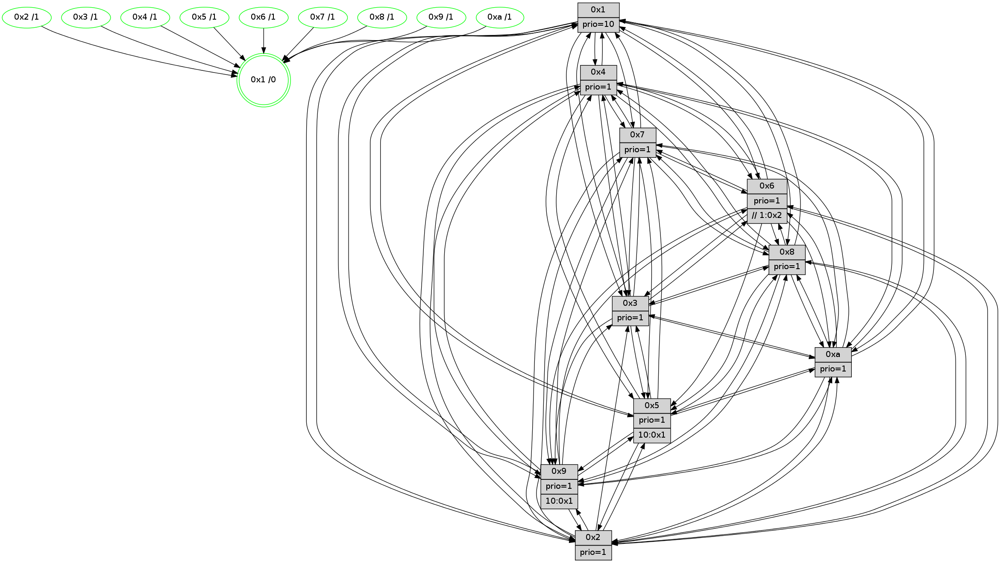

>> << IDX [start] -100 -25 -5 +0 +5 +25 +100 [1535.00959516]
 Previous packets
----------------------------------------------------------------------
1530.190819 beacon01(faad) #0 coord=01,02,03,04,05,06,07,0a,09,08 cycle=688.0ms assoc
-- color-indic=1 64 af 75
1530.200801 beacon02(faad) #0 coord=01,02,03,04,05,06,07,0a,09,08 cycle=688.0ms assoc 64 3c 44
1530.210801 beacon03(faad) #0 coord=01,02,03,04,05,06,07,0a,09,08 cycle=688.0ms assoc 64 46 09
1530.220803 beacon04(faad) #0 coord=01,02,03,04,05,06,07,0a,09,08 cycle=688.0ms assoc 64 31 e3
1530.230803 beacon05(faad) #0 coord=01,02,03,04,05,06,07,0a,09,08 cycle=688.0ms assoc 64 4b ae
1530.240802 beacon06(faad) #0 coord=01,02,03,04,05,06,07,0a,09,08 cycle=688.0ms assoc 64 c5 79
1530.250802 beacon07(faad) #0 coord=01,02,03,04,05,06,07,0a,09,08 cycle=688.0ms assoc 64 bf 34
1530.260807 beacon0a(faad) #0 coord=01,02,03,04,05,06,07,0a,09,08 cycle=688.0ms assoc 64 ce 3f
1530.280807 beacon08(faad) #0 coord=01,02,03,04,05,06,07,0a,09,08 cycle=688.0ms assoc 64 3a a5
1530.293939 [Hello(10): seq=908 sym=6,2,3,8,7,5,9,4,1 sysInfo=hasWarning stat=6:6,7,9,5/2:3,14,11,2/3:10,4,2,15/8:9,9,15,6/7:5,2,12,10/5:9,0,4,3/9:0,0,0,0/4:7,6,9,3/1:15,12,12,1]
1530.296659 [Hello(7): seq=975 sym=2,3,5,6,8,4,9,10,1 sysInfo=hasWarning stat=2:3,6,7,6/3:9,14,11,6/5:8,15,9,5/6:13,12,8,13/8:8,0,1,1/4:3,5,1,0/9:3,14,3,3/10:15,11,0,7/1:4,5,7,0]
1530.300119 [STC(1) #0.273 tree-change,inconsistent-stability,stable,to-color d=0]
1530.302389 [Hello(4): seq=975 sym=5,8,6,2,3,9,7,10,1 sysInfo=hasWarning stat=5:5,15,7,4/8:0,1,0,0/6:11,10,3,2/2:14,11,10,3/3:10,4,2,1/9:5,14,11,3/7:0,1,0,0/10:8,3,3,14/1:6,13,12,1]
1530.305697 [Color(7) seq=503 @0:0 prio=1]
1530.307446 [Color(4) seq=514 @0:0 prio=1]
1530.311142 [Hello(8): seq=919 sym=5,2,3,7,9,6,4,10,1 sysInfo=hasWarning stat=5:7,2,5,3/2:15,2,0,14/3:7,3,5,6/7:0,2,0,0/9:0,5,6,6/6:15,3,2,1/4:14,7,11,2/10:9,3,12,5/1:12,6,12,0]
1530.314297 [Color(1) seq=655 @0:0 prio=10]
1530.316196 [Color(8) seq=574 @0:0 prio=1]
----------------------------------------------------------------------
1530.978952 beacon01(faad) #0 coord=01,02,03,04,05,06,07,0a,09,08 cycle=688.0ms assoc
-- color-indic=1 64 7b 40
1530.988935 beacon02(faad) #0 coord=01,02,03,04,05,06,07,0a,09,08 cycle=688.0ms assoc 64 e8 71
1530.998935 beacon03(faad) #0 coord=01,02,03,04,05,06,07,0a,09,08 cycle=688.0ms assoc 64 92 3c
1531.008935 beacon04(faad) #0 coord=01,02,03,04,05,06,07,0a,09,08 cycle=688.0ms assoc 64 e5 d6
1531.018934 beacon05(faad) #0 coord=01,02,03,04,05,06,07,0a,09,08 cycle=688.0ms assoc 64 9f 9b
1531.028934 beacon06(faad) #0 coord=01,02,03,04,05,06,07,0a,09,08 cycle=688.0ms assoc 64 11 4c
1531.038935 beacon07(faad) #0 coord=01,02,03,04,05,06,07,0a,09,08 cycle=688.0ms assoc 64 6b 01
1531.048940 beacon0a(faad) #0 coord=01,02,03,04,05,06,07,0a,09,08 cycle=688.0ms assoc 64 1a 0a
1531.068940 beacon08(faad) #0 coord=01,02,03,04,05,06,07,0a,09,08 cycle=688.0ms assoc 64 ee 90
1531.081808 [Hello(1): seq=885 sym=4,2,9,5,10,3,8,6,7 sysInfo=coloring-mode-on,ColoringModeRequestCalled stat=4:6,1,9,4/2:7,3,1,7/9:12,13,2,3/5:1,11,9,11/10:8,3,12,8/3:1,3,9,13/8:0,14,4,7/6:11,13,5,3/7:5,1,12,3]
1531.084846 [STC(10)->1 #0.273 tree-change,inconsistent-stability,stable,to-color d=1]
1531.086258 [STC(9)->1 #0.273 tree-change,inconsistent-stability,stable,to-color d=1]
1531.087550 [Hello(5): seq=976 sym=7,6,4,3,1,9,8,10,2 sysInfo=hasWarning stat=7:4,5,14,1/6:10,6,3,0/4:15,12,4,0/3:9,11,5,3/1:12,13,6,0/9:10,5,10,12/8:8,3,4,8/10:3,15,14,9/2:10,2,3,9]
1531.091008 [STC(5)->1 #0.273 tree-change,inconsistent-stability,stable,to-color d=1]
1531.093392 [Hello(2): seq=972 sym=4,5,7,6,3,9,8,10,1 sysInfo=hasWarning stat=4:9,2,8,14/5:10,7,11,4/7:10,4,12,3/6:3,8,1,0/3:1,1,0,0/9:4,10,3,11/8:4,0,5,0/10:5,9,3,11/1:6,11,7,0]
1531.095827 [Hello(3): seq=976 sym=1,7,6,2,4,8,9,10,5 sysInfo=hasWarning stat=1:12,10,15,0/7:10,1,13,0/6:1,7,1,0/2:0,3,0,0/4:13,5,15,14/8:0,1,6,9/9:4,4,7,2/10:6,7,13,5/5:11,6,7,3]
1531.098388 [Color(10) seq=565 @0:0 prio=1]
1531.100148 [STC(2)->1 #0.273 tree-change,inconsistent-stability,stable,to-color d=1]
1531.101403 [Color(9) seq=519 @0:0 prio=1 >10.@1,1.@2,1.@3,1.@4]
1531.103567 [STC(3)->1 #0.273 tree-change,inconsistent-stability,stable,to-color d=1]
1531.105508 [Color(3) seq=605 @0:0 prio=1]
1531.108689 [Hello(6): seq=976 sym=3,2,5,4,7,9,8,10,1 sysInfo=hasWarning stat=3:9,0,10,0/2:13,5,4,1/5:1,5,0,6/4:9,13,8,9/7:6,5,6,1/9:10,10,11,12/8:10,10,1,10/10:14,8,4,13/1:15,13,13,1]
1531.113426 [STC(6)->1 #0.273 tree-change,inconsistent-stability,stable,to-color d=1]
1531.114728 [Color(2) seq=552 @0:0 prio=1]
1531.116349 [Color(6) seq=608 @0:0 prio=1 >>1.@2,1.@3,1.@4]
1531.122141 [Color(5) seq=512 @0:0 prio=1 >10.@1,1.@2,1.@3,1.@4]
----------------------------------------------------------------------
1531.767083 beacon01(faad) #0 coord=01,02,03,04,05,06,07,0a,09,08 cycle=688.0ms assoc
-- color-indic=1 64 c7 45
1531.777065 beacon02(faad) #0 coord=01,02,03,04,05,06,07,0a,09,08 cycle=688.0ms assoc 64 54 74
1531.787068 beacon03(faad) #0 coord=01,02,03,04,05,06,07,0a,09,08 cycle=688.0ms assoc 64 2e 39
1531.797065 beacon04(faad) #0 coord=01,02,03,04,05,06,07,0a,09,08 cycle=688.0ms assoc 64 59 d3
1531.807067 beacon05(faad) #0 coord=01,02,03,04,05,06,07,0a,09,08 cycle=688.0ms assoc 64 23 9e
1531.817066 beacon06(faad) #0 coord=01,02,03,04,05,06,07,0a,09,08 cycle=688.0ms assoc 64 ad 49
1531.827067 beacon07(faad) #0 coord=01,02,03,04,05,06,07,0a,09,08 cycle=688.0ms assoc 64 d7 04
1531.837071 beacon0a(faad) #0 coord=01,02,03,04,05,06,07,0a,09,08 cycle=688.0ms assoc 64 a6 0f
1531.857070 beacon08(faad) #0 coord=01,02,03,04,05,06,07,0a,09,08 cycle=688.0ms assoc 64 52 95
1531.868619 [Hello(9): seq=920 sym=2,5,3,4,7,6,8,10,1 sysInfo=hasWarning stat=2:4,9,13,13/5:7,14,5,0/3:2,14,9,7/4:2,6,5,3/7:13,0,5,5/6:5,11,11,1/8:1,15,3,9/10:3,5,7,0/1:15,6,13,1]
1531.872076 [Color(1) seq=656 @0:0 prio=10]
1531.873530 [Hello(4): seq=976 sym=5,8,6,2,3,9,7,10,1 sysInfo=hasWarning stat=5:6,0,8,4/8:1,2,0,0/6:12,11,4,2/2:15,12,11,3/3:10,5,3,1/9:6,15,12,3/7:0,1,0,0/10:8,4,4,14/1:7,14,12,1]
1531.877196 [Hello(10): seq=909 sym=6,2,3,8,7,5,9,4,1 sysInfo=hasWarning stat=6:7,8,10,5/2:3,15,12,2/3:10,5,3,15/8:10,10,15,6/7:6,3,12,10/5:9,1,4,3/9:0,1,0,0/4:8,7,9,3/1:0,13,13,1]
1531.880015 [Hello(8): seq=920 sym=5,2,3,7,9,6,4,10,1 sysInfo=hasWarning stat=5:8,3,6,3/2:0,3,1,14/3:7,4,6,6/7:0,2,0,0/9:0,6,7,6/6:0,4,3,1/4:14,7,11,2/10:10,4,13,5/1:13,6,12,0]
1531.884737 [Color(8) seq=575 @0:0 prio=1]
1531.887696 [Hello(7): seq=976 sym=2,3,5,6,8,4,9,10,1 sysInfo=hasWarning stat=2:4,7,8,6/3:9,15,12,6/5:9,0,10,5/6:14,13,9,13/8:9,1,1,1/4:3,6,1,0/9:3,15,4,3/10:0,12,1,7/1:5,6,7,0]
1531.890845 [Color(7) seq=504 @0:0 prio=1]
----------------------------------------------------------------------
1532.555214 beacon01(faad) #0 coord=01,02,03,04,05,06,07,0a,09,08 cycle=688.0ms assoc
-- color-indic=1 64 03 4b
1532.565197 beacon02(faad) #0 coord=01,02,03,04,05,06,07,0a,09,08 cycle=688.0ms assoc 64 90 7a
1532.575197 beacon03(faad) #0 coord=01,02,03,04,05,06,07,0a,09,08 cycle=688.0ms assoc 64 ea 37
1532.585197 beacon04(faad) #0 coord=01,02,03,04,05,06,07,0a,09,08 cycle=688.0ms assoc 64 9d dd
1532.595196 beacon05(faad) #0 coord=01,02,03,04,05,06,07,0a,09,08 cycle=688.0ms assoc 64 e7 90
1532.605197 beacon06(faad) #0 coord=01,02,03,04,05,06,07,0a,09,08 cycle=688.0ms assoc 64 69 47
1532.615198 beacon07(faad) #0 coord=01,02,03,04,05,06,07,0a,09,08 cycle=688.0ms assoc 64 13 0a
1532.625202 beacon0a(faad) #0 coord=01,02,03,04,05,06,07,0a,09,08 cycle=688.0ms assoc 64 62 01
1532.635201 beacon09(faad) #0 coord=01,02,03,04,05,06,07,0a,09,08 cycle=688.0ms assoc 64 ec d6
1532.645203 beacon08(faad) #0 coord=01,02,03,04,05,06,07,0a,09,08 cycle=688.0ms assoc 64 96 9b
1532.657110 [Hello(1): seq=886 sym=4,2,9,5,10,3,8,6,7 sysInfo=coloring-mode-on,ColoringModeRequestCalled stat=4:7,1,9,4/2:8,4,2,7/9:13,14,3,3/5:2,12,10,11/10:9,4,13,8/3:1,4,10,13/8:1,15,4,7/6:12,14,6,3/7:6,2,12,3]
1532.660785 [Hello(5): seq=977 sym=7,4,3,1,9,8,10,2 sysInfo=hasWarning stat=7:5,5,14,1/4:0,12,4,0/3:9,11,5,3/1:13,14,6,0/9:11,5,10,12/8:9,4,4,8/10:4,15,14,9/2:10,2,3,9]
1532.663235 [Hello(3): seq=977 sym=1,7,6,2,4,8,9,10,5 sysInfo=hasWarning stat=1:13,11,15,0/7:11,2,13,0/6:2,8,2,0/2:0,4,0,0/4:14,5,15,14/8:1,2,6,9/9:5,4,7,2/10:7,7,13,5/5:11,7,7,3]
1532.665719 [Color(10) seq=566 @0:0 prio=1]
1532.667602 [Hello(6): seq=977 sym=3,2,5,4,7,9,8,10,1 sysInfo=hasWarning stat=3:9,0,10,0/2:13,5,4,1/5:1,6,0,6/4:10,13,8,9/7:7,6,6,1/9:11,10,11,12/8:11,11,1,10/10:15,8,4,13/1:0,14,13,1]
1532.671363 [Color(6) seq=609 @0:0 prio=1 >>1.@2,1.@3,1.@4]
1532.673221 [Hello(2): seq=973 sym=4,5,7,6,3,9,8,10,1 sysInfo=hasWarning stat=4:10,2,8,14/5:10,8,11,4/7:11,5,12,3/6:3,9,1,0/3:2,1,0,0/9:5,11,3,11/8:5,1,5,0/10:6,9,3,11/1:7,12,7,0]
1532.675936 [Color(3) seq=606 @0:0 prio=1]
1532.677962 [Color(2) seq=553 @0:0 prio=1]
1532.681815 [Color(9) seq=520 @0:0 prio=1 >10.@1,1.@2,1.@3,1.@4]
1532.688352 [Color(5) seq=513 @0:0 prio=1 >10.@1,1.@2,1.@3,1.@4]
----------------------------------------------------------------------
1533.343344 beacon01(faad) #0 coord=01,02,03,04,05,06,07,0a,09,08 cycle=688.0ms assoc
-- color-indic=1 64 bf 4e
1533.353326 beacon02(faad) #0 coord=01,02,03,04,05,06,07,0a,09,08 cycle=688.0ms assoc 64 2c 7f
1533.363325 beacon03(faad) #0 coord=01,02,03,04,05,06,07,0a,09,08 cycle=688.0ms assoc 64 56 32
1533.373327 beacon04(faad) #0 coord=01,02,03,04,05,06,07,0a,09,08 cycle=688.0ms assoc 64 21 d8
1533.383325 beacon05(faad) #0 coord=01,02,03,04,05,06,07,0a,09,08 cycle=688.0ms assoc 64 5b 95
1533.393326 beacon06(faad) #0 coord=01,02,03,04,05,06,07,0a,09,08 cycle=688.0ms assoc 64 d5 42
1533.403327 beacon07(faad) #0 coord=01,02,03,04,05,06,07,0a,09,08 cycle=688.0ms assoc 64 af 0f
1533.413332 beacon0a(faad) #0 coord=01,02,03,04,05,06,07,0a,09,08 cycle=688.0ms assoc 64 de 04
1533.433334 beacon08(faad) #0 coord=01,02,03,04,05,06,07,0a,09,08 cycle=688.0ms assoc 64 2a 9e
1533.445512 [Hello(10): seq=910 sym=6,2,3,8,7,5,9,4,1 sysInfo=hasWarning stat=6:8,9,10,5/2:4,0,12,2/3:10,6,3,15/8:11,11,15,6/7:7,4,12,10/5:9,2,4,3/9:0,2,0,0/4:8,7,9,3/1:1,13,13,1]
1533.449195 [Color(1) seq=657 @0:0 prio=10]
1533.450457 [Hello(9): seq=921 sym=2,5,3,4,7,6,8,10,1 sysInfo=hasWarning stat=2:4,9,13,13/5:7,15,5,0/3:2,14,9,7/4:3,7,5,3/7:14,0,5,5/6:5,11,11,1/8:2,0,3,9/10:4,5,7,0/1:0,7,13,1]
1533.453063 [Hello(7): seq=977 sym=2,3,5,6,8,4,9,10,1 sysInfo=hasWarning stat=2:5,8,8,6/3:10,0,12,6/5:10,1,10,5/6:15,14,9,13/8:9,1,1,1/4:3,6,1,0/9:4,0,4,3/10:0,13,1,7/1:6,7,7,0]
1533.456350 [Hello(4): seq=977 sym=5,8,6,2,3,9,7,10,1 sysInfo=hasWarning stat=5:7,1,8,4/8:1,2,0,0/6:13,12,4,2/2:0,13,11,3/3:11,6,3,1/9:7,0,12,3/7:0,1,0,0/10:8,5,4,14/1:8,15,12,1]
1533.460500 [Color(7) seq=505 @0:0 prio=1]
1533.462044 [Hello(8): seq=921 sym=5,2,3,7,9,6,4,10,1 sysInfo=hasWarning stat=5:9,4,6,3/2:1,4,1,14/3:8,5,6,6/7:1,3,0,0/9:1,7,7,6/6:1,5,3,1/4:14,7,11,2/10:10,5,13,5/1:14,7,12,0]
1533.464737 [Color(4) seq=516 @0:0 prio=1]
1533.467571 [Color(8) seq=576 @0:0 prio=1]
----------------------------------------------------------------------
1534.131475 beacon01(faad) #0 coord=01,02,03,04,05,06,07,0a,09,08 cycle=688.0ms assoc
-- color-indic=1 64 8b 56
1534.141458 beacon02(faad) #0 coord=01,02,03,04,05,06,07,0a,09,08 cycle=688.0ms assoc 64 18 67
1534.151459 beacon03(faad) #0 coord=01,02,03,04,05,06,07,0a,09,08 cycle=688.0ms assoc 64 62 2a
1534.161459 beacon04(faad) #0 coord=01,02,03,04,05,06,07,0a,09,08 cycle=688.0ms assoc 64 15 c0
1534.171458 beacon05(faad) #0 coord=01,02,03,04,05,06,07,0a,09,08 cycle=688.0ms assoc 64 6f 8d
1534.181457 beacon06(faad) #0 coord=01,02,03,04,05,06,07,0a,09,08 cycle=688.0ms assoc 64 e1 5a
1534.191459 beacon07(faad) #0 coord=01,02,03,04,05,06,07,0a,09,08 cycle=688.0ms assoc 64 9b 17
1534.201466 beacon0a(faad) #0 coord=01,02,03,04,05,06,07,0a,09,08 cycle=688.0ms assoc 64 ea 1c
1534.221463 beacon08(faad) #0 coord=01,02,03,04,05,06,07,0a,09,08 cycle=688.0ms assoc 64 1e 86
1534.233962 [Hello(1): seq=887 sym=4,2,9,5,10,3,8,6,7 sysInfo=coloring-mode-on,ColoringModeRequestCalled stat=4:8,2,9,4/2:9,5,2,7/9:14,15,3,3/5:3,13,10,11/10:10,5,13,8/3:2,5,10,13/8:2,0,4,7/6:13,15,6,3/7:7,3,12,3]
1534.236776 [STC(1) #0.274 tree-change,inconsistent-stability,stable,to-color d=0]
1534.238012 [Hello(6): seq=978 sym=3,2,5,4,7,9,8,10,1 sysInfo=hasWarning stat=3:9,1,10,0/2:14,6,4,1/5:1,7,0,6/4:11,14,8,9/7:8,7,6,1/9:12,11,11,12/8:12,12,1,10/10:0,8,4,13/1:1,15,13,1]
1534.240562 [Hello(2): seq=974 sym=4,5,7,6,3,9,8,10,1 sysInfo=hasWarning stat=4:11,3,8,14/5:10,9,11,4/7:12,6,12,3/6:3,9,1,0/3:2,1,0,0/9:6,12,3,11/8:6,2,5,0/10:7,9,3,11/1:8,13,7,0]
1534.244808 [Color(6) seq=610 @0:0 prio=1 >>1.@2,1.@3,1.@4]
1534.248477 [Color(9) seq=521 @0:0 prio=1 >10.@1,1.@2,1.@3,1.@4]
1534.250227 [Color(2) seq=554 @0:0 prio=1]
1534.251793 [Hello(3): seq=978 sym=1,7,6,4,8,9,10,5 sysInfo=hasWarning stat=1:14,12,15,0/7:12,3,13,0/6:2,8,2,0/4:15,6,15,14/8:2,3,6,9/9:6,5,7,2/10:8,7,13,5/5:11,8,7,3]
1534.254805 [Color(3) seq=607 @0:0 prio=1]
1534.260583 [Color(10) seq=567 @0:0 prio=1]
1534.264089 [Hello(5): seq=978 sym=7,4,3,1,9,8,10,2 sysInfo=hasWarning stat=7:6,6,14,1/4:1,13,4,0/3:9,11,5,3/1:14,15,6,0/9:12,5,10,12/8:10,5,4,8/10:5,15,14,9/2:10,2,3,9]
1534.269011 [Color(5) seq=514 @0:0 prio=1 >10.@1,1.@2,1.@3,1.@4]
----------------------------------------------------------------------
1534.919607 beacon01(faad) #0 coord=01,02,03,04,05,06,07,0a,09,08 cycle=688.0ms assoc
-- color-indic=1 64 37 53
1534.929589 beacon02(faad) #0 coord=01,02,03,04,05,06,07,0a,09,08 cycle=688.0ms assoc 64 a4 62
1534.939590 beacon03(faad) #0 coord=01,02,03,04,05,06,07,0a,09,08 cycle=688.0ms assoc 64 de 2f
1534.949589 beacon04(faad) #0 coord=01,02,03,04,05,06,07,0a,09,08 cycle=688.0ms assoc 64 a9 c5
1534.959589 beacon05(faad) #0 coord=01,02,03,04,05,06,07,0a,09,08 cycle=688.0ms assoc 64 d3 88
1534.969590 beacon06(faad) #0 coord=01,02,03,04,05,06,07,0a,09,08 cycle=688.0ms assoc 64 5d 5f
1534.979590 beacon07(faad) #0 coord=01,02,03,04,05,06,07,0a,09,08 cycle=688.0ms assoc 64 27 12
1534.989595 beacon0a(faad) #0 coord=01,02,03,04,05,06,07,0a,09,08 cycle=688.0ms assoc 64 56 19